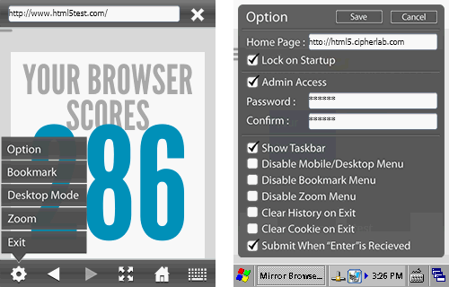

Mirror Browser 5 is a future-proofed HTML5 browser solution of the stable and mature platform from CipherLab.
We dedicate to provide browser solution since 2006 when introducing Mirror Browser based on IE. Mirror Browser 5 equipped with Webkit will bring you even more flexible and powerful features to ease your worries for a less than affordable price. It's not fancy, but designed to be ready for enterprise and industry to take a step forward to the future.
Mirror Browser 5 is not free, we allow you to try this software with CipherLab supported devices without limitation, but you have to purchase valid license to grant the right to use it. By using this software, you agree to the EULA. To order Mirror Browser 5, please contact our sales representatives.
Before you start looking into the detail, it's encouraged to use Mirror Browser 5 and play around with it first, as all features are pretty much self-explained.
However, there're more features hidden from the menu, so they will be listed and explained here:
The following configuration options are available in Mirror Browser 5 by setting up the env.txt file:
"CL_GEO_SERVER_URL" // Default: http://vec.cipherlab.com.tw/ip_geo_location.php "CL_GEO_XML_FILE" // Default: geoinfo.txt
The default server only feedbacks an inaccurated location from the client IP address, and it could be hosted on your own or improved by subscribing to paid services, such as Maxmind or IP2Location.
"CL_COOKIE_PATH" // Default: cookie.txt "CL_DISABLE_COOKIE" // Default: 0 "CL_MAX_COOKIES_SIZE" // Default: 51200 (bytes) // Recommended to be less than 102400 "CL_MAX_HISTORY" // Default: 100
"CL_PROXY_ENABLE" // Default: 0 (disable) "CL_PROXY_ADDR" // Default: none // Example: 127.0.0.1 "CL_PROXY_PORT" // Default: none // Example: 8080 "CL_PROXY_USERNAME" // Default: none "CL_PROXY_PASSWORD" // Default: none
"CL_NOSECURITY_HOST" // Default: (none) // Example: html5.cipherlab.com to ignore all security on this host "CL_USE_TLSV1" // Default: 0 (disable) "CL_VERIFYCERT" // Default: none (disable)
"CL_DEBUG_LOG" // Default: 0 (disable) "CL_DEBUG_CURL" // Default: 0 (disable) "CL_LOADTEST" // Default: 0 (disable)
The log will be saved as debug_log.txt under resources directory.